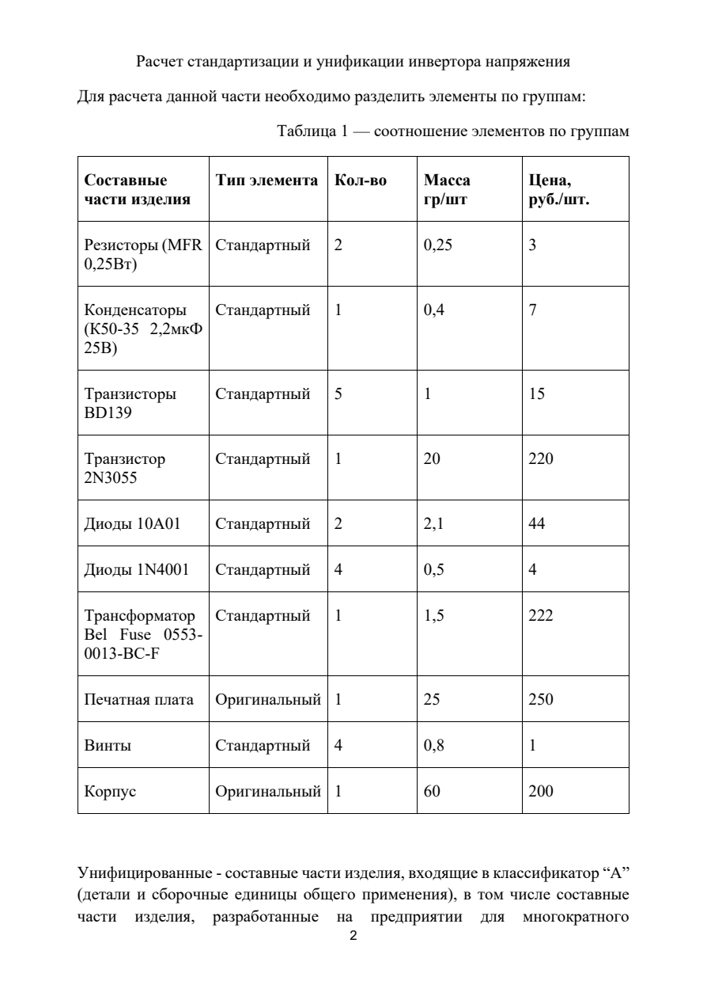
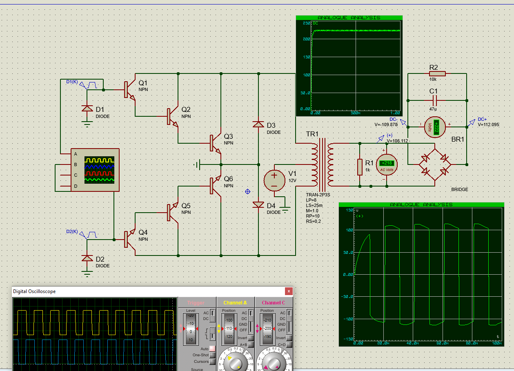
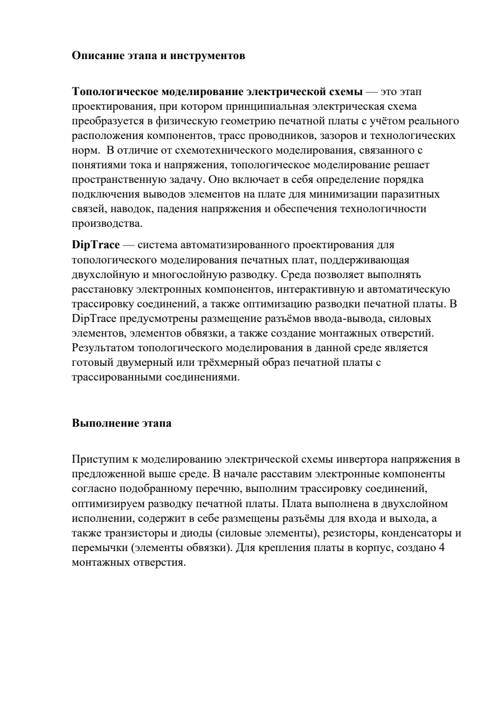
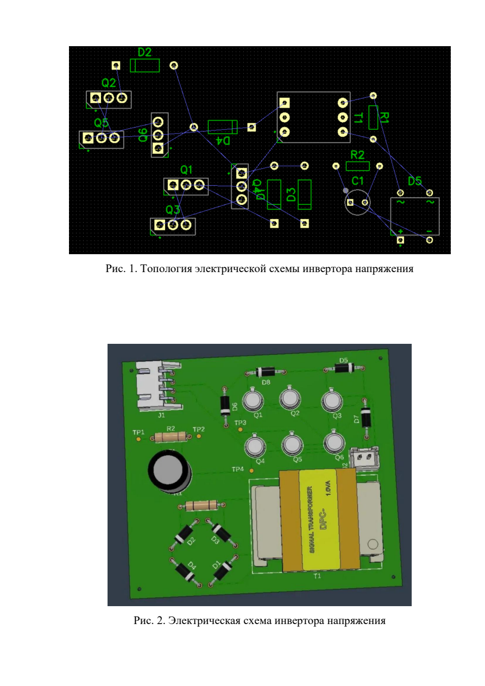
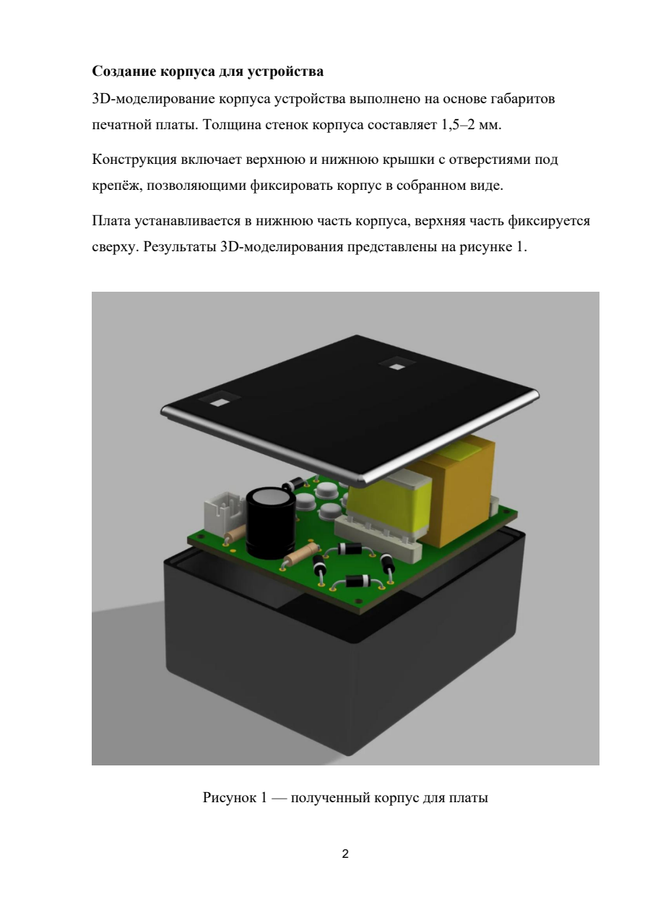

ИЭТР — Инвертор напряжения
Интерактивное электронное техническое руководство на изделие «Инвертор напряжения», разработанное студентами группы БИВ235 МИЭМ НИУ ВШЭ.
Состав проектной группы
Распределение задач
| Этап | Ответственный |
|---|---|
| Выбор схемы | Петр Коновченко |
| Создание ТЗ | Кира Румянцева |
| Схемотехническое моделирование | Петр Коновченко |
| Поиск элементной базы | Ева Данилова |
| Топологическое моделирование | Кира Румянцева |
| 3D моделирование конструкции | Ева Данилова |
| Тепловое моделирование | Петр Коновченко |
| Механическое моделирование | Александр Лисота |
| Расчёт себестоимости проекта | Кира Румянцева |
| Расчёт стандартизации и унификации | Александр Лисота |
| Исследование надёжности | Петр Коновченко |
| Исследование безопасности | Александр Лисота |
| Создание ИЭТР | Александр Лисота |
| Технологическая карта | Ева Данилова |
| Создание проектной документации | Кира Румянцева |
| Создание презентации | Ева Данилова |
Научный руководитель и заказчик
| Роль | ФИО |
|---|---|
| Заказчик / Научный руководитель | Полесский Сергей Николаевич |
| Организация | МИЭМ НИУ ВШЭ, Департамент компьютерной инженерии |
| Группа исполнителей | БИВ235, БИВ236 |
Работы по созданию инвертора напряжения сдаются исполнителем поэтапно в соответствии с Календарным планом проекта. По окончании каждого этапа исполнитель передаёт заказчику техническую документацию.
Нормативные ссылки
| Стандарт | Описание |
|---|---|
| ГОСТ 15150-69 | Климатическое исполнение «УХЛ» категории размещения 4 |
| ГОСТ 12.1.005-88 | Требования к температурной безопасности оборудования |
| ГОСТ 23751-86 | Печатные платы. Основные параметры конструкции |
| IP53 (МЭК 60529) | Степень защиты оболочки от пыли и влаги |
| Класс защиты II (МЭК 61140) | Двойная или усиленная изоляция |
Краткое описание изделия
Полное наименование: Инвертор напряжения
Краткое наименование: Инвертор
Устройство предназначено для преобразования постоянного входного напряжения в переменное выходное напряжение заданных параметров. Инвертор напряжения обеспечивает совместимость источников постоянного тока со стандартными нагрузками, требующими переменного напряжения.
Прототип предназначен для обеспечения работы бытовых приборов мощностью до 100 Вт в условиях отсутствия сетевого электропитания.
Режимы работы
- Активный режим — устройство переходит в данный режим при наличии входного напряжения 12 В и включённом тумблере питания. Режим сохраняется до тех пор, пока питание не будет отключено или тумблер не переведён в состояние «выкл».
- Пассивный (дежурный) режим — устройство находится в данном режиме при отсутствии входного напряжения или при выключенном тумблере.
Принцип действия
Схема включает трансформатор, мостовой выпрямитель, транзисторные каскады на базе BD139 и 2N3055 (NPN), резисторную обвязку и сглаживающий конденсатор. Входное напряжение 12 В постоянного тока преобразуется в ~220 В переменного тока с частотой 50 Гц.
Технические характеристики
| № | Параметр | Номинал |
|---|---|---|
| 1 | Напряжение питания, В | 12 |
| 2 | Выходное напряжение, В | ~220 |
| 3 | Выходная мощность, Вт | 100 |
| 4 | Частота выходного сигнала, Гц | 50 |
| 5 | Максимальный входной ток, А | 10 |
| 6 | Масса, г | 500 |
| 7 | Степень защиты оболочки | IP53 |
| 8 | Класс электробезопасности | II (двойная изоляция) |
Условия эксплуатации
Климатические условия
Устройство соответствует климатическому исполнению «УХЛ» категории размещения 4 по ГОСТ 15150-69.
| Параметр | Значение |
|---|---|
| Диапазон рабочих температур | от −10 °C до +40 °C |
| Относительная влажность воздуха | до 80% при 25 °C |
| Степень защиты | IP53 (частичная защита от пыли, защита от брызг) |
Механические воздействия
| Параметр | Значение |
|---|---|
| Максимальная скорость потока воздуха | 7 м/с |
| Ускорение при транспортной тряске | до 15 м/с² |
Перечень элементов схемы
| Позиц. | Наименование | Модель | Кол-во | Цена, руб./шт. |
|---|---|---|---|---|
| R1 | Резистор | MFR25SJRE52 (0,25 Вт) | 1 | 3 |
| R2 | Резистор | MFR25SJRE52 (0,25 Вт) | 1 | 3 |
| C1 | Конденсатор электролитический | К50-35, 2,2 мкФ, 25 В | 1 | 7 |
| T1 | Трансформатор | Bel Fuse 0553-0013-BC-F | 1 | 222 |
| D1–D4 | Диод выпрямительный | 1N4001 (1А, 50В) | 4 | 4 |
| D5 | Диод силовой | 10A01 (10А, 50В) | 2 | 44 |
| Q1–Q5 | Транзистор NPN | BD139G (80 Вт) | 5 | 15 |
| Q6 | Транзистор NPN силовой | 2N3055 (115 Вт) | 1 | 220 |
| — | Печатная плата | Оригинальная, 60×47 мм | 1 | 250 |
| — | Корпус (АБС пластик) | Оригинальный | 1 | 200 |
| — | Винты крепёжные | M3 | 4 | 1 |
Суммарная стоимость компонентов (1 шт.): ~1 088 руб. | Общее число деталей: 22 шт.
Расчёт показателей стандартизации и унификации
Расчёт выполнен для инвертора напряжения. Общее количество типоразмеров: n = 10 шт., общее количество составных частей: N = 22 шт., общая масса: m = 121,8 г.
Классификация составных частей
| Категория | Типоразмеров | Деталей | Масса, г |
|---|---|---|---|
| Оригинальные | 2 | 2 | 85 |
| Покупные | 8 | 20 | 36,8 |
| Стандартные / Заимствованные / Унифицированные | 0 | 0 | 0 |
Результаты расчётов

Надёжность — выбор элементной базы (Кн)
Для каждого элемента схемы рассчитан коэффициент нагрузки (Кн) — отношение фактической нагрузки (мощности или напряжения) к допустимой по даташиту. Значение Кн должно быть меньше 1,0.
| Позиция | Характеристика | Расчётное значение | По даташиту | Кн | Оценка |
|---|---|---|---|---|---|
| R1 | P, Вт | 0,02 Вт | 0,25 Вт | 0,18 | ✓ |
| R2 | P, Вт | 0,2 Вт | 0,25 Вт | 0,8 | ✓ |
| C1 | U, В | 6,84 В | 25 В | 0,273 | ✓ |
| Q1 (BD139) | P, Вт | 21,4 мВт | 80 Вт | <0,001 | ✓ |
| Q2 (BD139) | P, Вт | 106,6 мВт | 80 Вт | 0,0013 | ✓ |
| Q3 (BD139) | P, Вт | 2,41 Вт | 80 Вт | 0,03 | ✓ |
| Q4 (BD139) | P, Вт | 43,71 Вт | 80 Вт | 0,54 | ✓ |
| Q5 (2N3055) | P, Вт | 32,08 мВт | 115 Вт | <0,001 | ✓ |
| Q6 (BD139) | P, Вт | 5,46 нВт | 80 Вт | <0,001 | ✓ |
| D1–D4 (1N4001) | U, В | до 20,94 В | 50 В | до 0,42 | ✓ |
| D5 (10A01) | U, В | 12 В | 50 В | 0,24 | ✓ |
| T1 | U, В | Uin 12 В / Uout ±106 В | 500 В | 0,23 | ✓ |
Все элементы работают в допустимых режимах нагрузки. Коэффициент нагрузки не превышает 0,8 ни для одного компонента.
Схемотехническое моделирование
Схемотехническое моделирование выполнено в среде Proteus. Цель — проверка работоспособности схемы инвертора напряжения и подтверждение выходных параметров (U ≈ 220 В, f = 50 Гц).
Состав схемы
- Трансформатор TR1 (Bel Fuse 0553-0013-BC)
- Диоды — 6 шт. (мостовой выпрямитель BR1 + диоды обратной связи)
- Транзисторы NPN — 6 шт. (BD139 × 5, 2N3055 × 1)
- Резисторы — 2 шт. (MFR25SJRE52)
- Конденсатор — 1 шт. (К50-35, 2,2 мкФ)
- Источник постоянного напряжения 12 В
- Осциллограф и вольтметры (2 шт.) — контрольно-измерительные приборы
Все элементы в модели идеальные. Итоговое напряжение на выходе схемы составляет ~220 В переменного тока.

Топологическое моделирование
Топологическое моделирование выполнено в среде DipTrace. Принципиальная электрическая схема преобразована в физическую геометрию печатной платы с учётом реального расположения компонентов, трасс проводников, зазоров и технологических норм.
Описание этапа
Топологическое моделирование решает пространственную задачу: определяет порядок подключения выводов элементов на плате для минимизации паразитных связей, наводок, падения напряжения и обеспечения технологичности производства.
В DipTrace выполнены:
- Расстановка электронных компонентов согласно перечню
- Интерактивная и автоматическая трассировка соединений
- Оптимизация разводки печатной платы
- Размещение разъёмов, силовых элементов, монтажных отверстий
Габариты платы
A = 60 мм, B = 47 мм, h = 1,58 мм


3D моделирование
3D-моделирование корпуса устройства выполнено на основе габаритов печатной платы. Толщина стенок корпуса составляет 1,5–2 мм.
Конструктивные особенности
- Конструкция включает верхнюю и нижнюю крышки с отверстиями под крепёж
- Корпус выполнен из диэлектрического материала (АБС пластик)
- Плата устанавливается в нижнюю часть корпуса, верхняя часть фиксируется сверху
- Для сборки используются 4 крепёжных винта M3
Файлы 3D-моделей
| Файл | Описание | Формат |
|---|---|---|
| Корпус.stl | Нижняя часть корпуса | STL |
| Крышка.stl | Верхняя крышка корпуса | STL |
| Плата.step | Печатная плата с компонентами | STEP |

Механическая жёсткость и защита
Масса изделия
Габариты платы: A = 60 мм, B = 47 мм, h = 1,58 мм, ρ = 1875 кг/м³
Цилиндрическая жёсткость
Расстояние между центрами отверстий: a = 55,97 мм, b = 42,97 мм

Собственная частота колебаний
Устойчивость корпуса
Благодаря низкому расположению центра тяжести и широкой опорной поверхности, корпус обладает хорошей устойчивостью и защищён от случайного опрокидывания и вибраций в условиях нормальной эксплуатации.

Электробезопасность
| Параметр безопасности | Описание |
|---|---|
| Степень защиты оболочки | IP53 — частичная защита от пыли; защита от водяных брызг под углом до 60° к вертикали |
| Класс электробезопасности | Класс II — двойная или усиленная изоляция. Защитное заземление не предусмотрено |
| Материал корпуса | АБС пластик (диэлектрик) — исключает передачу опасного напряжения на внешние поверхности |
| Температурная безопасность | Макс. превышение температуры поверхности: не более +15 °C (до 45 °C), ГОСТ 12.1.005-88 |
| Радиационная безопасность | Мощность дозы ионизирующего излучения ≤ 100 мкР/ч |
| Взрывобезопасность | Устройство не относится к категории взрывоопасного оборудования |

Электромагнитная совместимость (ЭМС)
В конструкции печатной платы реализованы меры, обеспечивающие электромагнитную совместимость устройства:
- Путь сигнального тока минимизирован, что снижает уровень паразитных наводок
- Плата спроектирована в соответствии с основными рекомендациями по ЭМС, включая рациональное размещение компонентов
- Трассировка проводников оптимизирована для минимизации электромагнитных помех
- Силовые и сигнальные цепи разделены на плате

Материалы и компоненты
Расчёт выполнен для партии 150 шт.
| Элемент | Позиция | Модель | Цена, руб./шт. | Кол-во (на партию) | Сумма, руб. |
|---|---|---|---|---|---|
| Резистор | R1 | MFR25SJRE52 | 3 | 150 | 450 |
| Резистор | R2 | MFR25SJRE52 | 3 | 150 | 450 |
| Трансформатор | T1 | 0553-0013-BC | 222 | 150 | 33 300 |
| Конденсатор | C1 | К50-35 2,2 мкФ 25В | 7 | 150 | 1 050 |
| Диод | D1–D4 | 10A01–10A10 | 4 | 600 | 2 400 |
| Диод силовой | D5 | 10A01 | 44 | 150 | 6 600 |
| Транзистор | Q1–Q5 | BD139G | 15 | 750 | 11 250 |
| Транзистор силовой | Q6 | 2N3055 (NPN) | 220 | 150 | 33 000 |
| Печатная плата | — | Оригинальная | 250 | 150 | 37 500 |
| Винты | — | M3 | 1 | 1 200 | 1 200 |
| Корпус | — | АБС пластик | 200 | 150 | 30 000 |
| Итого (партия 150 шт.) | 157 200 руб. | ||||
Операционная работа
| Вид работы | Ставка, руб./час | Время, ч | Стоимость, руб. |
|---|---|---|---|
| Разработка ТЗ | 800 | 4 | 3 200 |
| Схемотехническое моделирование, поиск элементной базы | 800 | 16 | 12 800 |
| Топологическое моделирование | 1 100 | 10 | 11 000 |
| 3D-моделирование | 1 000 | 6 | 6 000 |
| Механическое моделирование | 1 000 | 5 | 5 000 |
| Тепловое моделирование | 1 300 | 4 | 5 200 |
| Расчёт экономических показателей | 700 | 3 | 2 100 |
| Расчёт стандартизации и унификации | 700 | 2 | 1 400 |
| Исследование надёжности | 1 100 | 3 | 3 300 |
| Создание ИЭТР | 900 | 8 | 7 200 |
| Создание документации | 800 | 10 | 8 000 |
| Сборка устройства | 600 | 6 | 3 600 |
| Испытание прототипа | 1 000 | 8 | 8 000 |
| Итого | 76 800 руб. | ||
Оборудование и инструменты
| Наименование | Цена, руб. | Кол-во | Стоимость, руб. |
|---|---|---|---|
| Паяльник с тонким жалом | 950 | 2 | 1 900 |
| Мультиметр цифровой | 1 000 | 1 | 1 000 |
| Кусачки боковые | 400 | 1 | 400 |
| Пинцет | 300 | 1 | 300 |
| Отвёртка крестовая и плоская | 500 | 1 | 500 |
| Припой с флюсом (катушка) | 400 | 1 | 400 |
| Губка для очистки жала | 100 | 1 | 100 |
| Обезжириватель | 200 | 1 | 200 |
| Ноутбук | 70 965 | 1 | 70 965 |
| Итого | 75 765 руб. | ||
Итоговые экономические показатели
| Статья расходов | Сумма, руб. |
|---|---|
| Материалы и компоненты | 157 200 |
| Операционная работа | 76 800 |
| Оборудование | 75 765 |
| Себестоимость | 309 765 |
| Рентабельность продукции | 30% |
| Отпускная цена (партия) | 402 694,50 |
| Прибыль (до налогов) | 92 929,50 |
| Налог | 24 161,67 |
| Чистая прибыль | 68 767,83 |
| Рентабельность производства | 17,1% |
| Себестоимость единицы изделия | 2 065 руб./шт. |
| Отпускная цена единицы изделия | 2 685 руб./шт. |